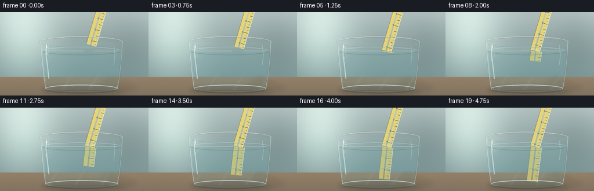
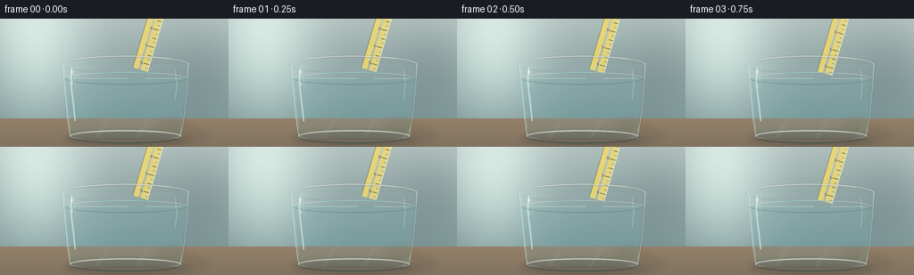
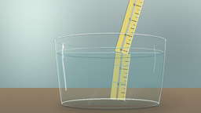

CODING AGENTS AS PIXEL WORLD MODELS
traex/GPT-5.6-Sol · phygen_075
点击播放 · 原生 RGB 像素
逐轮保存的候选
回放视频、检查图与代码变化。
每份候选均可单独播放。实际图片检查记录在下方工具轨迹中。
候选 01播放与检查图
点击播放 · 原生 RGB 像素


展开代码变化
--- 上一保存版本
+++ 本次保存版本
@@ -0,0 +1,300 @@
+from pathlib import Path
+import math
+import numpy as np
+from PIL import Image, ImageDraw, ImageFilter, ImageFont
+import artifact_io
+
+# Deterministic, supersampled procedural rendering.
+W, H, N = 256, 144, 20
+S = 4
+WW, HH = W*S, H*S
+rng = np.random.default_rng(7501)
+
+
+def sc(v):
+ return int(round(v*S))
+
+
+def pts(seq):
+ return [(sc(x), sc(y)) for x, y in seq]
+
+
+def rgba_layer():
+ return Image.new("RGBA", (WW, HH), (0, 0, 0, 0))
+
+
+def line(draw, xy, fill, width=1, **kwargs):
+ draw.line(pts(xy), fill=fill, width=max(1, sc(width)), **kwargs)
+
+
+def ellipse(draw, box, fill=None, outline=None, width=1):
+ draw.ellipse(tuple(sc(v) for v in box), fill=fill, outline=outline, width=max(1, sc(width)))
+
+
+def polygon(draw, xy, fill):
+ draw.polygon(pts(xy), fill=fill)
+
+
+def make_background():
+ yy, xx = np.mgrid[0:HH, 0:WW]
+ x = xx / S
+ y = yy / S
+ # Cool studio wall with a luminous window-like glow on the left.
+ top = np.array([178., 194., 192.])
+ bot = np.array([119., 145., 146.])
+ q = np.clip(y / 123.0, 0, 1)[..., None]
+ arr = top*(1-q) + bot*q
+ glow = np.exp(-((x-39)/55)**2 - ((y-43)/73)**2)[..., None]
+ arr += glow*np.array([43., 45., 39.])
+ # Darker, soft kitchen/background shapes.
+ arr -= (18*np.exp(-((x-225)/42)**2 - ((y-48)/68)**2))[..., None]
+ arr += (5*np.sin(x/31.0) + 2*np.cos(y/18.0))[..., None]
+ # Table surface begins behind the glass.
+ table = y >= 112
+ tq = np.clip((y-112)/32, 0, 1)
+ table_col = np.stack([148-19*tq, 128-13*tq, 104-8*tq], axis=-1)
+ arr[table] = table_col[table]
+ # Fine fixed sensor/film texture, blurred after rasterization.
+ noise = rng.normal(0, 1.15, (HH, WW, 1))
+ arr += noise
+ return np.uint8(np.clip(arr, 0, 255))
+
+
+BASE_ARR = make_background()
+BASE = Image.fromarray(BASE_ARR, "RGB")
+
+
+def glass_bounds(y):
+ # Gently tapering cylindrical tumbler.
+ t = np.clip((y-51.0)/(84.0), 0, 1)
+ return 69.5 + 9.0*t, 211.0 - 9.0*t
+
+
+def water_background(base_arr, phase):
+ out = base_arr.copy()
+ yy, xx = np.mgrid[0:HH, 0:WW]
+ x = xx / S
+ y = yy / S
+ t = np.clip((y-67.0)/67.0, 0, 1)
+ left = 72.0 + 7.0*t
+ right = 208.5 - 6.0*t
+ # Curved lower edge follows the thick glass base.
+ mask = (y >= 66.0) & (y <= 134.0) & (x >= left) & (x <= right)
+ # Cylinder magnifies the background toward the center, with a mild
+ # time-varying liquid displacement concentrated near the surface.
+ center = 140.0
+ wave = 1.15*np.sin((x-center)/8.5 + phase)*np.exp(-(y-67)/18.0)
+ source_x = center + (x-center)*0.884 + wave
+ source_y = y + 0.55*np.sin(x/14.0 + phase*0.7)*np.exp(-(y-67)/26.0)
+ sx = np.clip(np.rint(source_x*S).astype(int), 0, WW-1)
+ sy = np.clip(np.rint(source_y*S).astype(int), 0, HH-1)
+ refr = base_arr[sy, sx].astype(float)
+ depth = np.clip((y-66)/68, 0, 1)[..., None]
+ tint = np.array([110., 178., 183.])
+ refr = refr*(0.91 - 0.035*depth) + tint*(0.09 + 0.035*depth)
+ # Thin moving caustic bands on the table seen through clear water.
+ caust = (np.maximum(0, np.sin(x/7.2 + y/11.5 + phase*1.1))**13)
+ caust *= np.clip((y-102)/26, 0, 1)*9.0
+ refr += caust[..., None]*np.array([0.72, 0.95, 1.0])
+ out[mask] = np.uint8(np.clip(refr[mask], 0, 255))
+ return out
+
+
+def draw_rotated_text(layer, text, center, angle_deg, size=5, fill=(48,45,27,180)):
+ # Small physically attached ruler labels.
+ fnt = ImageFont.truetype("/usr/share/fonts/truetype/dejavu/DejaVuSans.ttf", sc(size))
+ box = fnt.getbbox(text)
+ tw, th = box[2]-box[0]+sc(2), box[3]-box[1]+sc(2)
+ tile = Image.new("RGBA", (tw, th), (0,0,0,0))
+ td = ImageDraw.Draw(tile)
+ td.text((sc(1)-box[0], sc(1)-box[1]), text, font=fnt, fill=fill)
+ rot = tile.rotate(angle_deg, resample=Image.Resampling.BICUBIC, expand=True)
+ layer.alpha_composite(rot, (sc(center[0])-rot.width//2, sc(center[1])-rot.height//2))
+
+
+def draw_ruler_segment(layer, p0, direction, u0, u1, width, underwater=False):
+ if u1 <= u0 + 0.1:
+ return
+ d = np.array(direction, float)
+ d /= np.linalg.norm(d)
+ n = np.array([d[1], -d[0]])
+ a = np.array(p0) + d*u0
+ b = np.array(p0) + d*u1
+ half = width/2
+ poly = [a+n*half, b+n*half, b-n*half, a-n*half]
+ dr = ImageDraw.Draw(layer, "RGBA")
+ if underwater:
+ body = (214, 205, 115, 188)
+ edge1, edge2 = (246, 245, 190, 180), (87, 125, 109, 120)
+ mark = (27, 57, 53, 165)
+ else:
+ body = (239, 217, 111, 221)
+ edge1, edge2 = (255, 249, 180, 225), (114, 103, 49, 150)
+ mark = (43, 40, 24, 215)
+ polygon(dr, poly, body)
+ line(dr, [a+n*half, b+n*half], edge1, 0.8)
+ line(dr, [a-n*half, b-n*half], edge2, 0.65)
+ # Translucent inner bevel and central sheen.
+ line(dr, [a+n*(half-2.0), b+n*(half-2.0)], (255,255,218,95 if underwater else 120), 1.0)
+ line(dr, [a-n*1.0, b-n*1.0], (255,245,172,35 if underwater else 55), 2.4)
+
+ # Tick marks remain anchored to the physical ruler and move continuously.
+ start_tick = int(math.ceil(u0/5.0))
+ end_tick = int(math.floor(u1/5.0))
+ for k in range(start_tick, end_tick+1):
+ u = k*5.0
+ c = np.array(p0) + d*u
+ if k % 4 == 0:
+ ln, thick = 7.2, 0.85
+ elif k % 2 == 0:
+ ln, thick = 5.2, 0.65
+ else:
+ ln, thick = 3.2, 0.48
+ q0 = c + n*(half-0.8)
+ q1 = c + n*(half-ln)
+ line(dr, [q0, q1], mark, thick)
+ # Sparse centimeter numbers, rendered only when fully within the segment.
+ for k in range(int(math.ceil(u0/20.0)), int(math.floor(u1/20.0))+1):
+ u = k*20.0
+ if u < u0+3 or u > u1-3:
+ continue
+ c = np.array(p0)+d*u-n*1.0
+ draw_rotated_text(layer, str((k+2)%10), c, math.degrees(math.atan2(d[1], d[0]))-90,
+ 4.2, mark)
+
+
+def render_frame(i):
+ t = i/(N-1)
+ ease = 0.5 - 0.5*math.cos(math.pi*t) # careful, steady hand motion
+ phase = i*0.28
+ arr = water_background(BASE_ARR, phase)
+ im = Image.fromarray(arr, "RGB").convert("RGBA")
+
+ # Soft cast shadows anchor the glass and ruler to the scene.
+ shadows = rgba_layer()
+ sd = ImageDraw.Draw(shadows, "RGBA")
+ ellipse(sd, (72, 127, 221, 143), fill=(34,45,42,66))
+ polygon(sd, [(191,111),(238,130),(223,139),(170,121)], (45,43,35,24))
+ shadows = shadows.filter(ImageFilter.GaussianBlur(sc(4.0)))
+ im = Image.alpha_composite(im, shadows)
+
+ # Subtle liquid volume veil.
+ liquid = rgba_layer()
+ ld = ImageDraw.Draw(liquid, "RGBA")
+ polygon(ld, [(72.5,66.5),(208.5,66.5),(202.5,133.5),(79,133.5)], (89,174,183,13))
+ # Soft brightness close to the top surface and deeper cyan near bottom.
+ polygon(ld, [(77,110),(204,110),(202,133),(79,133)], (63,142,151,10))
+ im = Image.alpha_composite(im, liquid)
+
+ # Ruler physical geometry: it moves down along its own axis.
+ d_air = np.array([-0.280, 0.960]); d_air /= np.linalg.norm(d_air)
+ tip_y = 57.0 + 72.0*ease
+ tip_x = 157.0 + (tip_y-57.0)*(d_air[0]/d_air[1])
+ tip = np.array([tip_x, tip_y])
+ length = 208.0
+ ptop = tip - d_air*length
+ wl = 66.8
+ u_cross = (wl-ptop[1])/d_air[1]
+ u_end = length
+
+ ruler = rgba_layer()
+ # Underwater apparent ray: slightly magnified and rotated toward vertical,
+ # producing the familiar discontinuity at the air-water boundary.
+ if u_end > u_cross:
+ cross = ptop + d_air*u_cross
+ d_under = np.array([-0.118, 0.993]); d_under /= np.linalg.norm(d_under)
+ submerged_physical = max(0.0, u_end-u_cross)
+ apparent_len = submerged_physical*0.93
+ # A 2 px lateral displacement plus widening models cylindrical glass.
+ apparent_start = cross + np.array([2.1, 0.8])
+ draw_ruler_segment(ruler, apparent_start, d_under, 0, apparent_len, 18.9, True)
+ # Soft wavering light ribbons crossing the submerged plastic.
+ rd = ImageDraw.Draw(ruler, "RGBA")
+ for off in (16, 38, 61):
+ if off < apparent_len-2:
+ c = apparent_start+d_under*off
+ n2 = np.array([d_under[1], -d_under[0]])
+ line(rd, [c-n2*8.5, c+n2*8.5], (214,255,249,48), 1.1)
+ # Air portion is undistorted and remains crisp.
+ draw_ruler_segment(ruler, ptop, d_air, 0, min(u_end, u_cross), 17.0, False)
+ im = Image.alpha_composite(im, ruler)
+
+ # Water surface: elliptical meniscus, moving highlight, and entry ripples.
+ surf = rgba_layer()
+ wd = ImageDraw.Draw(surf, "RGBA")
+ # Rear meniscus is dim; front meniscus is crisp and bright.
+ wd.arc((sc(72),sc(60),sc(209),sc(74)), 180, 360, fill=(202,239,238,130), width=sc(0.8))
+ wd.arc((sc(72),sc(60),sc(209),sc(74)), 0, 180, fill=(48,112,121,110), width=sc(0.65))
+ # Surface sheen, broken where ruler enters.
+ entry_x = float((ptop + d_air*u_cross)[0]) if 0 <= u_cross <= length else 153
+ line(wd, [(78,67.0),(entry_x-9,67.0)], (225,250,246,105), 0.65)
+ line(wd, [(entry_x+10,67.0),(203,67.0)], (228,250,247,97), 0.65)
+ if u_end > u_cross:
+ depth = min(1.0, (u_end-u_cross)/25.0)
+ # Two localized elliptical ripples expand as the ruler enters.
+ amp = 0.35 + 0.75*math.sin(min(1,t*1.6)*math.pi)
+ for j, (rx, ry, alpha) in enumerate(((12,2.6,115),(22,4.1,67))):
+ shift = (phase*2.0 + j*2.4) % 5.0
+ box=(entry_x-rx-shift, 66.8-ry, entry_x+rx+shift, 66.8+ry)
+ wd.arc(tuple(sc(v) for v in box), 188, 350,
+ fill=(226,252,249,int(alpha*depth*amp)), width=sc(0.55))
+ wd.arc(tuple(sc(v) for v in box), 8, 170,
+ fill=(51,123,133,int(alpha*0.55*depth)), width=sc(0.45))
+ ellipse(wd, (entry_x-8.8,64.9,entry_x+8.8,69.0), outline=(242,255,251,int(90*depth)), width=0.55)
+ surf = surf.filter(ImageFilter.GaussianBlur(sc(0.12)))
+ im = Image.alpha_composite(im, surf)
+
+ # The glass itself: rim, tapered walls, thick base, and layered reflections.
+ glass = rgba_layer()
+ gd = ImageDraw.Draw(glass, "RGBA")
+ # Barely perceptible front pane.
+ polygon(gd, [(69.5,51),(211,51),(202,134.5),(78.5,134.5)], (221,247,245,8))
+ # Top lip, back and front arcs use different values for depth.
+ gd.arc((sc(68.5),sc(41.5),sc(212),sc(61.5)), 180, 360,
+ fill=(248,255,255,188), width=sc(1.15))
+ gd.arc((sc(68.5),sc(41.5),sc(212),sc(61.5)), 0, 180,
+ fill=(95,139,144,125), width=sc(1.0))
+ gd.arc((sc(70.0),sc(43.2),sc(210.5),sc(59.8)), 180, 360,
+ fill=(255,255,255,104), width=sc(0.55))
+ # Curved glass walls.
+ line(gd, [(69.5,51),(71.5,74),(75.5,113),(78.5,133)], (234,254,253,165), 1.05)
+ line(gd, [(211,51),(209.4,75),(205.4,113),(202,133)], (229,252,250,155), 1.0)
+ line(gd, [(72.0,54),(74.0,83),(78.5,122)], (255,255,255,77), 0.55)
+ line(gd, [(208.8,53),(207.0,83),(203.2,121)], (52,103,111,65), 0.52)
+ # Thick base ellipse and inner base refraction.
+ gd.arc((sc(78),sc(126),sc(202.5),sc(140.0)), 0, 180,
+ fill=(32,83,91,120), width=sc(1.1))
+ gd.arc((sc(78),sc(125.2),sc(202.5),sc(138.4)), 180, 360,
+ fill=(241,255,253,185), width=sc(1.2))
+ gd.arc((sc(81),sc(128),sc(199.5),sc(137.2)), 0, 180,
+ fill=(198,237,236,105), width=sc(0.75))
+ # Tall curved specular ribbons.
+ line(gd, [(80,55),(79,72),(82,96),(84,115)], (255,255,255,150), 1.45)
+ line(gd, [(84,54),(83,67),(85,78)], (255,255,255,76), 0.58)
+ line(gd, [(196,57),(198,74),(196,91)], (240,255,254,91), 0.8)
+ # Small travelling glint emphasizes smooth glass and motion.
+ gy = 61 + 21*(0.5+0.5*math.sin(t*math.pi))
+ ellipse(gd, (78.8,gy-3.2,81.5,gy+3.2), fill=(255,255,255,115))
+ glass = glass.filter(ImageFilter.GaussianBlur(sc(0.16)))
+ im = Image.alpha_composite(im, glass)
+
+ # Tiny sharp white highlights restored after glass blur.
+ final_hi = rgba_layer(); hd = ImageDraw.Draw(final_hi, "RGBA")
+ line(hd, [(73.5,47.5),(92,44.1),(111,43.0)], (255,255,255,190), 0.55)
+ line(hd, [(170,43.2),(190,45.2)], (255,255,255,133), 0.45)
+ ellipse(hd, (80.0,57.5,81.2,62.0), fill=(255,255,255,175))
+ im = Image.alpha_composite(im, final_hi)
+
+ # Downsample for antialiased, photographic edges.
+ out = im.convert("RGB").resize((W,H), Image.Resampling.LANCZOS)
+ return np.asarray(out, dtype=np.uint8)
+
+
+def main():
+ frames = np.stack([render_frame(i) for i in range(N)], axis=0)
+ artifact_io.save(frames, Path(__file__).resolve().parent)
+ print("saved", frames.shape, frames.dtype)
+
+
+if __name__ == "__main__":
+ main()
可观测工具轨迹
实际执行的命令与返回图片。
命令 1exit 0
/bin/bash -lc "cat prompt.txt && printf '\\n--- GENERATION_RULES.md ---\\n' && cat GENERATION_RULES.md"
命令 2exit 0
/bin/bash -lc "cat task_spec.json && printf '\\n--- FILES ---\\n' && find . -maxdepth 2 -type f -printf '%p\\n' | sort"
命令 3exit 0
/bin/bash -lc 'cat artifact_io.py'
命令 4exit 0
/bin/bash -lc "cat > generate.py <<'PY'
from pathlib import Path
import math
import numpy as np
from PIL import Image, ImageDraw, ImageFilter, ImageFont
import artifact_io
# Deterministic, supersampled procedural rendering.
W, H, N = 256, 144, 20
S = 4
WW, HH = W*S, H*S
rng = np.random.default_rng(7501)
def sc(v):
return int(round(v*S))
def pts(seq):
return [(sc(x), sc(y)) for x, y in seq]
def rgba_layer():
return Image.new(\"RGBA\", (WW, HH), (0, 0, 0, 0))
def line(draw, xy, fill, width=1, **kwargs):
draw.line(pts(xy), fill=fill, width=max(1, sc(width)), **kwargs)
def ellipse(draw, box, fill=None, outline=None, width=1):
draw.ellipse(tuple(sc(v) for v in box), fill=fill, outline=outline, width=max(1, sc(width)))
def polygon(draw, xy, fill):
draw.polygon(pts(xy), fill=fill)
def make_background():
yy, xx = np.mgrid[0:HH, 0:WW]
x = xx / S
y = yy / S
# Cool studio wall with a luminous window-like glow on the left.
top = np.array([178., 194., 192.])
bot = np.array([119., 145., 146.])
q = np.clip(y / 123.0, 0, 1)[..., None]
arr = top*(1-q) + bot*q
glow = np.exp(-((x-39)/55)**2 - ((y-43)/73)**2)[..., None]
arr += glow*np.array([43., 45., 39.])
# Darker, soft kitchen/background shapes.
arr -= (18*np.exp(-((x-225)/42)**2 - ((y-48)/68)**2))[..., None]
arr += (5*np.sin(x/31.0) + 2*np.cos(y/18.0))[..., None]
# Table surface begins behind the glass.
table = y >= 112
tq = np.clip((y-112)/32, 0, 1)
table_col = np.stack([148-19*tq, 128-13*tq, 104-8*tq], axis=-1)
arr[table] = table_col[table]
# Fine fixed sensor/film texture, blurred after rasterization.
noise = rng.normal(0, 1.15, (HH, WW, 1))
arr += noise
return np.uint8(np.clip(arr, 0, 255))
BASE_ARR = make_background()
BASE = Image.fromarray(BASE_ARR, \"RGB\")
def glass_bounds(y):
# Gently tapering cylindrical tumbler.
t = np.clip((y-51.0)/(84.0), 0, 1)
return 69.5 + 9.0*t, 211.0 - 9.0*t
def water_background(base_arr, phase):
out = base_arr.copy()
yy, xx = np.mgrid[0:HH, 0:WW]
x = xx / S
y = yy / S
t = np.clip((y-67.0)/67.0, 0, 1)
left = 72.0 + 7.0*t
right = 208.5 - 6.0*t
# Curved lower edge follows the thick glass base.
mask = (y >= 66.0) & (y <= 134.0) & (x >= left) & (x <= right)
# Cylinder magnifies the background toward the center, with a mild
# time-varying liquid displacement concentrated near the surface.
center = 140.0
wave = 1.15*np.sin((x-center)/8.5 + phase)*np.exp(-(y-67)/18.0)
source_x = center + (x-center)*0.884 + wave
source_y = y + 0.55*np.sin(x/14.0 + phase*0.7)*np.exp(-(y-67)/26.0)
sx = np.clip(np.rint(source_x*S).astype(int), 0, WW-1)
sy = np.clip(np.rint(source_y*S).astype(int), 0, HH-1)
refr = base_arr[sy, sx].astype(float)
depth = np.clip((y-66)/68, 0, 1)[..., None]
tint = np.array([110., 178., 183.])
refr = refr*(0.91 - 0.035*depth) + tint*(0.09 + 0.035*depth)
# Thin moving caustic bands on the table seen through clear water.
caust = (np.maximum(0, np.sin(x/7.2 + y/11.5 + phase*1.1))**13)
caust *= np.clip((y-102)/26, 0, 1)*9.0
refr += caust[..., None]*np.array([0.72, 0.95, 1.0])
out[mask] = np.uint8(np.clip(refr[mask], 0, 255))
return out
def draw_rotated_text(layer, text, center, angle_deg, size=5, fill=(48,45,27,180)):
# Small physically attached ruler labels.
fnt = ImageFont.truetype(\"/usr/share/fonts/truetype/dejavu/DejaVuSans.ttf\", sc(size))
box = fnt.getbbox(text)
tw, th = box[2]-box[0]+sc(2), box[3]-box[1]+sc(2)
tile = Image.new(\"RGBA\", (tw, th), (0,0,0,0))
td = ImageDraw.Draw(tile)
td.text((sc(1)-box[0], sc(1)-box[1]), text, font=fnt, fill=fill)
rot = tile.rotate(angle_deg, resample=Image.Resampling.BICUBIC, expand=True)
layer.alpha_composite(rot, (sc(center[0])-rot.width//2, sc(center[1])-rot.height//2))
def draw_ruler_segment(layer, p0, direction, u0, u1, width, underwater=False):
if u1 <= u0 + 0.1:
return
d = np.array(direction, float)
d /= np.linalg.norm(d)
n = np.array([d[1], -d[0]])
a = np.array(p0) + d*u0
b = np.array(p0) + d*u1
half = width/2
poly = [a+n*half, b+n*half, b-n*half, a-n*half]
dr = ImageDraw.Draw(layer, \"RGBA\")
if underwater:
body = (214, 205, 115, 188)
edge1, edge2 = (246, 245, 190, 180), (87, 125, 109, 120)
mark = (27, 57, 53, 165)
else:
body = (239, 217, 111, 221)
edge1, edge2 = (255, 249, 180, 225), (114, 103, 49, 150)
mark = (43, 40, 24, 215)
polygon(dr, poly, body)
line(dr, [a+n*half, b+n*half], edge1, 0.8)
line(dr, [a-n*half, b-n*half], edge2, 0.65)
# Translucent inner bevel and central sheen.
line(dr, [a+n*(half-2.0), b+n*(half-2.0)], (255,255,218,95 if underwater else 120), 1.0)
line(dr, [a-n*1.0, b-n*1.0], (255,245,172,35 if underwater else 55), 2.4)
# Tick marks remain anchored to the physical ruler and move continuously.
start_tick = int(math.ceil(u0/5.0))
end_tick = int(math.floor(u1/5.0))
for k in range(start_tick, end_tick+1):
u = k*5.0
c = np.array(p0) + d*u
if k % 4 == 0:
ln, thick = 7.2, 0.85
elif k % 2 == 0:
ln, thick = 5.2, 0.65
else:
ln, thick = 3.2, 0.48
q0 = c + n*(half-0.8)
q1 = c + n*(half-ln)
line(dr, [q0, q1], mark, thick)
# Sparse centimeter numbers, rendered only when fully within the segment.
for k in range(int(math.ceil(u0/20.0)), int(math.floor(u1/20.0))+1):
u = k*20.0
if u < u0+3 or u > u1-3:
continue
c = np.array(p0)+d*u-n*1.0
draw_rotated_text(layer, str((k+2)%10), c, math.degrees(math.atan2(d[1], d[0]))-90,
4.2, mark)
def render_frame(i):
t = i/(N-1)
ease = 0.5 - 0.5*math.cos(math.pi*t) # careful, steady hand motion
phase = i*0.28
arr = water_background(BASE_ARR, phase)
im = Image.fromarray(arr, \"RGB\").convert(\"RGBA\")
# Soft cast shadows anchor the glass and ruler to the scene.
shadows = rgba_layer()
sd = ImageDraw.Draw(shadows, \"RGBA\")
ellipse(sd, (72, 127, 221, 143), fill=(34,45,42,66))
polygon(sd, [(191,111),(238,130),(223,139),(170,121)], (45,43,35,24))
shadows = shadows.filter(ImageFilter.GaussianBlur(sc(4.0)))
im = Image.alpha_composite(im, shadows)
# Subtle liquid volume veil.
liquid = rgba_layer()
ld = ImageDraw.Draw(liquid, \"RGBA\")
polygon(ld, [(72.5,66.5),(208.5,66.5),(202.5,133.5),(79,133.5)], (89,174,183,13))
# Soft brightness close to the top surface and deeper cyan near bottom.
polygon(ld, [(77,110),(204,110),(202,133),(79,133)], (63,142,151,10))
im = Image.alpha_composite(im, liquid)
# Ruler physical geometry: it moves down along its own axis.
d_air = np.array([-0.280, 0.960]); d_air /= np.linalg.norm(d_air)
tip_y = 57.0 + 72.0*ease
tip_x = 157.0 + (tip_y-57.0)*(d_air[0]/d_air[1])
tip = np.array([tip_x, tip_y])
length = 208.0
ptop = tip - d_air*length
wl = 66.8
u_cross = (wl-ptop[1])/d_air[1]
u_end = length
ruler = rgba_layer()
# Underwater apparent ray: slightly magnified and rotated toward vertical,
# producing the familiar discontinuity at the air-water boundary.
if u_end > u_cross:
cross = ptop + d_air*u_cross
d_under = np.array([-0.118, 0.993]); d_under /= np.linalg.norm(d_under)
submerged_physical = max(0.0, u_end-u_cross)
apparent_len = submerged_physical*0.93
# A 2 px lateral displacement plus widening models cylindrical glass.
apparent_start = cross + np.array([2.1, 0.8])
draw_ruler_segment(ruler, apparent_start, d_under, 0, apparent_len, 18.9, True)
# Soft wavering light ribbons crossing the submerged plastic.
rd = ImageDraw.Draw(ruler, \"RGBA\")
for off in (16, 38, 61):
if off < apparent_len-2:
c = apparent_start+d_under*off
n2 = np.array([d_under[1], -d_under[0]])
line(rd, [c-n2*8.5, c+n2*8.5], (214,255,249,48), 1.1)
# Air portion is undistorted and remains crisp.
draw_ruler_segment(ruler, ptop, d_air, 0, min(u_end, u_cross), 17.0, False)
im = Image.alpha_composite(im, ruler)
# Water surface: elliptical meniscus, moving highlight, and entry ripples.
surf = rgba_layer()
wd = ImageDraw.Draw(surf, \"RGBA\")
# Rear meniscus is dim; front meniscus is crisp and bright.
wd.arc((sc(72),sc(60),sc(209),sc(74)), 180, 360, fill=(202,239,238,130), width=sc(0.8))
wd.arc((sc(72),sc(60),sc(209),sc(74)), 0, 180, fill=(48,112,121,110), width=sc(0.65))
# Surface sheen, broken where ruler enters.
entry_x = float((ptop + d_air*u_cross)[0]) if 0 <= u_cross <= length else 153
line(wd, [(78,67.0),(entry_x-9,67.0)], (225,250,246,105), 0.65)
line(wd, [(entry_x+10,67.0),(203,67.0)], (228,250,247,97), 0.65)
if u_end > u_cross:
depth = min(1.0, (u_end-u_cross)/25.0)
# Two localized elliptical ripples expand as the ruler enters.
amp = 0.35 + 0.75*math.sin(min(1,t*1.6)*math.pi)
for j, (rx, ry, alpha) in enumerate(((12,2.6,115),(22,4.1,67))):
shift = (phase*2.0 + j*2.4) % 5.0
box=(entry_x-rx-shift, 66.8-ry, entry_x+rx+shift, 66.8+ry)
wd.arc(tuple(sc(v) for v in box), 188, 350,
fill=(226,252,249,int(alpha*depth*amp)), width=sc(0.55))
wd.arc(tuple(sc(v) for v in box), 8, 170,
fill=(51,123,133,int(alpha*0.55*depth)), width=sc(0.45))
ellipse(wd, (entry_x-8.8,64.9,entry_x+8.8,69.0), outline=(242,255,251,int(90*depth)), width=0.55)
surf = surf.filter(ImageFilter.GaussianBlur(sc(0.12)))
im = Image.alpha_composite(im, surf)
# The glass itself: rim, tapered walls, thick base, and layered reflections.
glass = rgba_layer()
gd = ImageDraw.Draw(glass, \"RGBA\")
# Barely perceptible front pane.
polygon(gd, [(69.5,51),(211,51),(202,134.5),(78.5,134.5)], (221,247,245,8))
# Top lip, back and front arcs use different values for depth.
gd.arc((sc(68.5),sc(41.5),sc(212),sc(61.5)), 180, 360,
fill=(248,255,255,188), width=sc(1.15))
gd.arc((sc(68.5),sc(41.5),sc(212),sc(61.5)), 0, 180,
fill=(95,139,144,125), width=sc(1.0))
gd.arc((sc(70.0),sc(43.2),sc(210.5),sc(59.8)), 180, 360,
fill=(255,255,255,104), width=sc(0.55))
# Curved glass walls.
line(gd, [(69.5,51),(71.5,74),(75.5,113),(78.5,133)], (234,254,253,165), 1.05)
line(gd, [(211,51),(209.4,75),(205.4,113),(202,133)], (229,252,250,155), 1.0)
line(gd, [(72.0,54),(74.0,83),(78.5,122)], (255,255,255,77), 0.55)
line(gd, [(208.8,53),(207.0,83),(203.2,121)], (52,103,111,65), 0.52)
# Thick base ellipse and inner base refraction.
gd.arc((sc(78),sc(126),sc(202.5),sc(140.0)), 0, 180,
fill=(32,83,91,120), width=sc(1.1))
gd.arc((sc(78),sc(125.2),sc(202.5),sc(138.4)), 180, 360,
fill=(241,255,253,185), width=sc(1.2))
gd.arc((sc(81),sc(128),sc(199.5),sc(137.2)), 0, 180,
fill=(198,237,236,105), width=sc(0.75))
# Tall curved specular ribbons.
line(gd, [(80,55),(79,72),(82,96),(84,115)], (255,255,255,150), 1.45)
line(gd, [(84,54),(83,67),(85,78)], (255,255,255,76), 0.58)
line(gd, [(196,57),(198,74),(196,91)], (240,255,254,91), 0.8)
# Small travelling glint emphasizes smooth glass and motion.
gy = 61 + 21*(0.5+0.5*math.sin(t*math.pi))
ellipse(gd, (78.8,gy-3.2,81.5,gy+3.2), fill=(255,255,255,115))
glass = glass.filter(ImageFilter.GaussianBlur(sc(0.16)))
im = Image.alpha_composite(im, glass)
# Tiny sharp white highlights restored after glass blur.
final_hi = rgba_layer(); hd = ImageDraw.Draw(final_hi, \"RGBA\")
line(hd, [(73.5,47.5),(92,44.1),(111,43.0)], (255,255,255,190), 0.55)
line(hd, [(170,43.2),(190,45.2)], (255,255,255,133), 0.45)
ellipse(hd, (80.0,57.5,81.2,62.0), fill=(255,255,255,175))
im = Image.alpha_composite(im, final_hi)
# Downsample for antialiased, photographic edges.
out = im.convert(\"RGB\").resize((W,H), Image.Resampling.LANCZOS)
return np.asarray(out, dtype=np.uint8)
def main():
frames = np.stack([render_frame(i) for i in range(N)], axis=0)
artifact_io.save(frames, Path(__file__).resolve().parent)
print(\"saved\", frames.shape, frames.dtype)
if __name__ == \"__main__\":
main()
PY
python generate.py"命令 5exit 0
/bin/bash -lc "python - <<'PY'
from pathlib import Path
import numpy as np
from PIL import Image
p=Path('.')
z=np.load('pixels.npz')['pixels']
fs=sorted((p/'frames').glob('*.png'))
print('pixels', z.shape, z.dtype, 'frames', len(fs))
arr=np.stack([np.asarray(Image.open(f).convert('RGB')) for f in fs])
print('rgb',arr.shape,arr.dtype,'range',int(arr.min()),int(arr.max()))
print('mean frame deltas', [round(float(np.abs(arr[i].astype(float)-arr[i-1]).mean()),2) for i in range(1,20)])
for f in ['generate.py','pixels.npz','index.html','inspection.png','transition_check.png']:
print(f, Path(f).stat().st_size)
PY"视觉工具实际返回图片 1

视觉工具实际返回图片 2

保存候选 1 份；完成命令 5 次；可验证图片返回 2 张。原始 API 响应与完整日志保留在本地。